The Generate FPGA Array Data tool generates database files used in the following
downstream tools:
*.map files used for
Programming
RAM structural information used in
Configure Design Initialization and Memories tools
To generate FPGA array data:
Make sure the design completed the Place and Route step. If not, Libero SoC runs
the upstream tools (Synthesis, Compile Netlist, and Place and Route) implicitly
before it generates the FPGA Array Data.
Double-click Generate FPGA Array Data or right-click
Generate FPGA Array Data in the Design Flow window
and click Run
Figure 3-123. Generate FPGA Array
Data
3.8.2 Initializing Design Blocks (PolarFire and PolarFire SoC)
The Configure Design Initialization Data and Memories tool allows you to initialize design blocks such as LSRAM, uSRAM, XCVR (transceivers), and PCIe using data stored in non-volatile uPROM, sNVM, or external SPI Flash storage memory. The tool has the following tabs for defining the specification of the design initialization sequence and the specification of the initialization clients:
Note: The Configure Design Initialization Data and
Memories tool can be started only after completing the Generate FPGA Array Data
step.
Use tabs in the tool to configure the design initialization data and memories. If a tab title has an asterisk (*) next to it, it means an item on that tab has been changed but not yet applied. The following table describes the buttons common to every tab.
Table 3-69. Common Buttons on Every Tab
Button
Description
Apply
Click this button to save the changes made in a tab. The Apply button saves configuration changes only. For the initialization of the memory block to take effect, click Generate Initialization Clients on the Device Initialization tab.
Discard
Click this button to cancel any changes made in a tab.
After completing the configuration, perform the following steps to program the initialization data:
Generate initialization clients.
Generate or export the bitstream.
Program the device.
While importing memory files, note that the option Use relative path allows you to choose the path relative to project or relative to environment variable, depending on the setting used in Libero. This option is extended to all memory files that are referenced in various configurators, as well as to sNVM/uPROM/SPI-Flash update tools.
Design Initialization is the first tab in the Configure Design
Initialization Data and Memories tool. The following topics describe the options in this
tab.
In the first stage, the initialization sequence de-asserts the FABRIC_POR_N signal and starts the
I/O calibration routine. The initialization client for this stage is always placed in
sNVM. It uses the last two pages of the sNVM memory space. There is one configuration
option for this stage.
Figure 3-126. Design Initialization Tab - First Stage
Table 3-70 3-71. First Stage Configuration
Option
Configuration Option
Description
Broadcast instructions to initialize RAMs to zeros
Affects all LSRAM and uSRAM blocks in the device. Selecting this
option initializes all RAM blocks to zeros before FABRIC PoR is
asserted. To accommodate the additional instructions, the sNVM start
page will be 202. To initialize the individual logical RAM blocks to
zeros without using this global option, select the Content
filled with 0s option in the Add Data Storage Client
dialog box, and then wait for the corresponding RAM INIT complete signal
before accessing those RAMs (see the PolarFire Family Power-Up and Resets User Guide, which describes the INIT DONE/COMPLETE signals).
If this
global option is not selected, the sNVM start page will be
219.
In the second stage, the initialization sequence initializes the PCIe and XCVR blocks present in the design. This stage is grayed out if the design does not have PCIe or XCVR Blocks.
The initialization client for this stage is named INIT_STAGE_2_SNVM_CLIENT. It is always placed in sNVM at the start address of your choice. The start address can be at the start of an sNVM page (page boundary) only.
Each sNVM page is 256 bytes in size, so the valid start hexadecimal addresses are 0x0, 0x100, 0x200, and so on. Only the plaintext non-authenticated client is supported for initialization.
Figure 3-127. Design Initialization Tab - Second Stage
In the third stage, the initialization sequence initializes the Fabric RAMs present in the design. The initialization client for this stage is placed in the memory type of your choice (uPROM/sNVM/External SPI Flash). If the design does not have any Fabric RAMs, this stage of the initialization sequence is not needed and is grayed out. Each logical RAM block can be initialized from any of the three memory types. Use the Fabric RAMs configuration tab to assign the memory type to the logical RAM blocks.
Only the memory types used by the design, as defined in the Fabric RAMs configuration tab, are selected and enabled.Figure 3-128. Design Initialization Tab - Third Stage
Table 3-70 3-71. Memory Types
Memory Type
Description
μPROM
Name of the initialization client is INIT_STAGE_3_UPROM_CLIENT. Its start address is your choice, subject to the limitation that the start address can only be at the start of a uPROM block. Each μPROM block is 256 words, so the allowed hexadecimal start addresses are 0x0, 0x100, 0x200, and so on.
sNVM
If there are no PCIe or XCVR blocks used in the design, the name of the sNVM initialization client for this stage is INIT_STAGE_3_SNVM_CLIENT. If there are PCIe or XCVR blocks used in the design along with Fabric RAMs, the name of the sNVM initialization client for this stage is INIT_STAGE_2_3_SNVM_CLIENT, which has the initialization sequence/instructions for the PCIe or XCVR blocks followed by Fabric RAMs. Its start address is your choice, subject to the limitation that the start address can only be at the start of an sNVM page (page boundary). Each sNVM page is 256 bytes long, so the allowed hexadecimal start addresses are 0x0, 0x100, 0x200, and so on.
SPI-Flash
Name of the initialization client is INIT_STAGE_3_SPIFLASH_CLIENT.
SPI-Flash Binding
Four binding options are available:
No Binding Plaintext: <root>_uic.bin file is a script file that can be opened to see readable text.
Binding Encrypted with Default Key: <root>_uic.bin file is encrypted with the default encryption key. The design version is displayed and can be modified from Configure Programming Options. If Default key is selected, you do not need to specify any other details.
Binding Encrypted with User Encryption Key 1 (UEK1): <root>_uic.bin file is encrypted with UEK1. The design version is displayed and can be modified from Configure Programming Options. You must configure SPM along with UEK1. If UEK1 is not specified, the Generate SPI Flash Image and Export SPI Flash Image steps cause an error. UEK1 can be configured using the Configure Security Tool.
Binding Encrypted with User Encryption Key 2 (UEK2): <root>_uic.bin file is encrypted with UEK2. The design version is displayed and can be modified from Configure Programming Options. You must configure SPM along with UEK2. If UEK2 is not specified, the Generate SPI Flash Image and Export SPI Flash Image steps cause an error. UEK2 can be configured using the Configure Security Tool.
SPI Clock divider value
Clock divider value for the clock that is generated by the System Controller. Choose the value that meets the minimum clock width requirement of the external SPI Flash.
Use the Time Out (s) drop-down list to select a time-out for completing all three stages of the initialization process. The default setting is 128, which is the maximum value.Figure 3-129. Design Initialization Tab - Time Out (s)
The Auto Calibration Time Out value specifies the time-out before which
the I/O calibration instructions must be completed. The default
value is 3000 milliseconds. This time-out value applies to
MPF100T, MPF200T, MPF300T, and MPF500T devices.Figure 3-130. Design Initialization Tab - Auto
Calibration Time Out
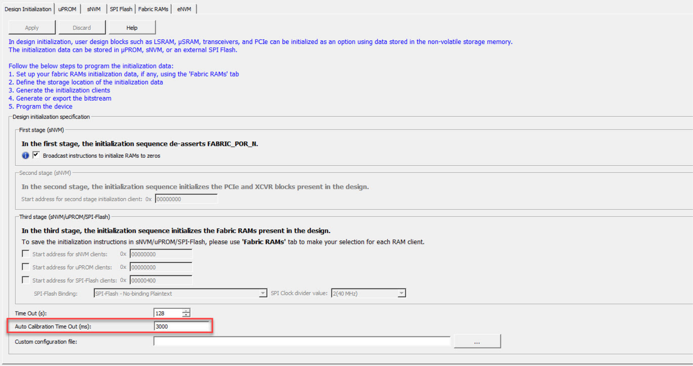
The Custom Configuration file contains signal integrity parameters for
Transceivers. Click the Browse button at the far right to navigate to
and select a custom configuration file for Transceiver solutions.Figure 3-131. Design Initialization Tab - Custom
Configuration File
μPROM is the second tab in the Configure Design Initialization Data and Memories tool. Use this tab to manage data clients targeted for μPROM memory.Figure 3-132. uPROM Tab
The following table describes the elements in the μPROM tab.
Table 3-72 3-76 3-81 3-85. Elements in the uPROM Tab
Loads the design’s original µPROM configuration file into the <project>/component/work/UPROM.cfg file.
This button is grayed out if the design does not have an original μPROM configuration file.
This configuration changes when the design is updated in the design window. If changes are made to the design configuration after you click Apply, info icons appear next to the Load design configuration button and the title of the μPROM tab.
The tooltip for both icons contains the time-stamp information of the design configuration file. The icons disappear the next time you click Apply.
Navigate to and select a file whose content will be used to fill the uPROM.
Format
Memory file types. Choices are:
Micro Binary 9-bit (default)
Micro Binary 32-bit
Intel-Hex
Motorola-S
Simple-Hex
Content filled with 0s
Populates the uPROM with zeros.
Start address
Start address, in hexadecimal notation, of the uPROM client. If there are multiple uPROM
clients, the start address must not overlap; otherwise, a warning
message appears.
Range: 0–CBFF (Hex)
Number of 9-bit words
Number, in decimal notation, of 9-bit words to populate the uPROM. If the number of 9-bit words exceeds the memory size of the uPROM, an “out-of-bounds” warning message appears.
If you need to change the settings for a uPROM client, you can edit the client.
To edit a uPROM client:
In the table of the uPROM tab, perform one of the following steps:
Double-click the client you want to edit.
Click the client you want to edit, and click the Edit button.
Right-click the client you want to edit and select Edit.
When the Edit Data Storage Client dialog box appears, complete the fields (see the following table).
Click OK.
Click the Apply button.
Table 3-75. Edit Data Storage Client Dialog Box
Field
Description
Client name
Read-only field that shows the name of the uPROM client.
Content from file
Navigate to and specify a file whose content will be used to fill the uPROM.
Content filled with 0s
Populates the uPROM with zeros.
Start address
Start address, in hexadecimal notation, of the uPROM client. If there are multiple uPROM
clients, the start address must not overlap; otherwise, a
warning message appears.
Range: 0–CBFF (Hex)
Number of 9-bit words
Number, in decimal notation, of 9-bit words to populate the uPROM. If the number of 9-bit words exceeds the memory size of the uPROM, an “out-of –bounds” warning message appears.
sNVM is the third tab in the Configure Design Initialization Data and Memories tool. Use this tab to manage data clients targeted for sNVM memory. The table in the tab is automatically populated if Broadcast instructions to initialize RAM’s to zero’s is checked in the Design Initialization tab.
Figure 3-135. sNVM Tab with Broadcast Option EnabledFigure 3-136. sNVM Tab without Broadcast Option Enabled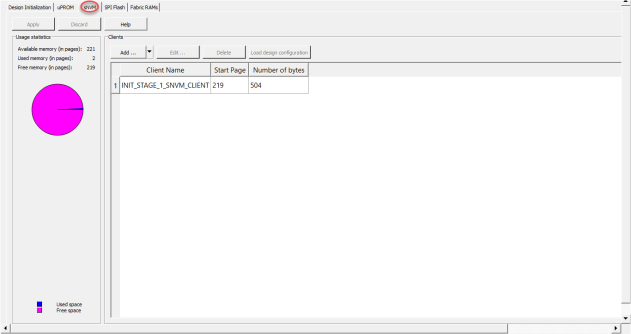
The following table describes the elements in the sNVM tab.
Table 3-72 3-76 3-81 3-85. Elements in the sNVM Tab
Loads the design’s original sNVM configuration file into the
<project>/component/work/sNVM.cfg file.
This button is grayed out if the design does not have an
original sNVM configuration file.
This configuration
changes when the design is updated in the design window. If
changes are made to the design configuration after you click
Apply, info icons appear next to the
Load design configuration button and the title of the sNVM
tab.
The tooltip for both icons contains the time-stamp
information of the design configuration file. The icons
disappear the next time you click
Apply.
Usage Statistics pie chart
Shows available, used, and free memory, in pages, for all sNVM clients.
In the sNVM
tab, click the Add drop-down list, and then select the client
you want to add (see the following figure).Figure 3-137 3-157. sNVM Client
Selections
Complete the fields in the dialog
box, and then click OK (see the following sections).
Table 3-77. Fields in the Add PlainText NonAuthenticated Client Dialog Box
Field
Description
Client name
Name of the sNVM client to be added.
Content from file
Navigate to and specify a file whose content will be used to fill the sNVM.
Note: If you select the Intel-HEX format, the Base address specified is subtracted from user address records. Intel-Hex files have Extended Linear and Extended Segment addresses. The Complete Starting address of the Linear or Segment address in the Hex file must be specified. For example, if the Intel-Hex file has the Extended Linear address 2022, specify the base address 20220000.
Content filled with 0s
Populates the sNVM with zero.
No content
Client is a placeholder and will not be programmed.
Start page
Start page, in decimal notation, of the sNVM client. sNVM client address starts at page
boundaries. If there are multiple sNVM clients, their start page cannot
be the same; otherwise, a warning message appears.
Range: 0–220
(decimal)
Number of bytes
Total number, in decimal notation, of bytes to populate the sNVM. If the number of bytes
exceeds the memory size of the sNVM, an out-of–bounds warning message
appears.
Range: 1–47376
Use content for simulation
Check if this client must be loaded for the simulation run.
Fabric access
Allows you to read from Fabric, write to Fabric, or both.
MSS access
Allows you to read from MSS, write to MSS, or both.
3.8.2.3.1.2 Settings for Boot Mode 2 Clients (PolarFire SoC)
PolarFire SoC supports Boot Mode 2. In this boot mode, you specify the start page in sNVM. All authenticated/encrypted clients will share the same USK. If you add authenticated/encrypted clients, you must create a USK client to specify the USK.
Table 3-78 3-88 3-90. Fields in the Boot Mode 2 Client Dialog Box
Field
Description
Client name
Read-only field that shows the name of the sNVM client.
Content from file
Navigate to and specify a file whose content will be used to fill the sNVM.
Note: If you select the Intel-HEX format, the Base address specified is subtracted from user address records. Intel-Hex files have Extended Linear and Extended Segment addresses. The Complete Starting address of the Linear or Segment address in the Hex file must be specified. For example, if the Intel-Hex file has the Extended Linear address 2022, specify the base address 20220000.
Format
Memory file types. Choice is Intel-Hex. The Intel-Hex file is generated using Soft Console.
Base Address
Base address that is subtracted from the user address records for Intel-Hex files.
Start page
Start page, in decimal notation, of the sNVM client. sNVM client address starts at page
boundaries. If there are multiple sNVM clients, their start page cannot
be the same; otherwise, a warning message appears.
Range: 0–220
(decimal)
Number of bytes
Read-only field that shows the total number of bytes to populate the sNVM. The value is shown
in decimal notation. If the number of bytes exceeds the memory size of
the sNVM, an out-of–bounds warning message appears.
Table 3-79. Fields in the Add USK Client Dialog Box
Field
Description
Start page
Start page can vary between 0 and 220.
USK Key
USK key (24 hexadecimal characters). A random key can be generated by clicking the padlock icon to the right of this field.
Reprogram
Check if this client must be programmed.
Use content for simulation
Check if this client must be loaded for the simulation run.
Use as ROM
Check if this client must be used as ROM.
Fabric Access
Allows you to read from Fabric.
MSS Access
Allows you to read from MSS.
Note:
Atleast one of Fabric or MSS Access should be selected for Read, else a DRC error will be generated as "Atleast Fabric or MSS should be selected for Read".
SPI Flash is the fourth tab in the Configure Design Initialization Data
and Memories tool. Use this tab to configure SPI Flash, select the memory size, and
enable auto updating for parts of the SPI Flash configuration. The configuration is
saved in the spiflash.cfg file in the Libero design implementation
folder.Figure 3-143. SPI Flash Tab
The following table describes the elements in the SPI Flash tab.
Table 3-72 3-76 3-81 3-85. Elements in the SPI Flash
Tab
This option selects all clients for programming at once. It is
enabled when there is at least one unselected client.
Bypass All
This option unselects all clients, except for STAGE 3
Initialization client. It is enabled if there is at least one
client besides the STAGE 3 Initialization that is selected for
programming (STAGE 3 Initialization client must always be
programmed).
Enable Auto Update check
box
Enables auto update on the target device. The bitstream generated
in Libero enables this feature.
If you check this option, the SPI Bitstream for the Auto update
client can be added. Auto update is set to index 1
automatically.
SPI Flash memory size
Selects the memory size, in
KB, for the SPI Flash.
Usage Statistics pie
chart
Shows available, used, and
free memory, in KB, for all SPI Flash clients.
The SPI Flash clients table shows the SPI Flash clients you add.
Each SPI Flash client appears on its own row. After you add a SPI Flash client, you can select it in this table to edit or delete the client.
Figure 3-147 3-154. SPI Flash Clients Table
Table 3-74 3-80 3-82 3-86. Columns in the SPI Flash Clients Table
Column
Description
Program
Check boxes for selecting clients that will be enabled or disabled for programming. Clients whose content is filled with 1s cannot be enabled for programming.
Name
Name you gave to the client.
Type
Type of client. Choices are:
SPI Bitstream for Recovery/Golden
SPI Bitstream for IAP
SPI Bitstream for Auto Update
Data Storage
Design Initalization
Index
Index 0 is reserved for SPI Bitstream for Recovery/Golden.
Index 1 is reserved for auto update.
The index for an IAP client can be in the range of 2 - 255.
STAGE3 INIT Client
If SPI Flash has a STAGE3 Initialization client, this columns shows the name of the client.
Start Address
Starting address, you gave to the client.
End Address
Ending address that Libero SoC determined based on the start address you provided.
Content
Choices are:
.spi file: SPI bitstream clients.
intel-hex (.hex or .ihx): Data storage clients.
Binary (*.bin): Data storage or design initialization client.
Design Version
Client design version.
User Security
Denotes where the SPI Bitstream client programs custom user security
Bypass Back Level
Protection for Recovery/Golden bitstream
This feature is enabled for only the SPI Bitstream clients for Recovery/Golden.
Observe the following guidelines while using a SPI file generated with Libero 2022.2 or later version to create or edit a SPI bitstream client:
If you use a SPI file with custom security to create or edit the client, an error message tells you that the SPI file cannot contain security.
The SPI bitstream file used for SPI bitstream client must match the Libero target device. A SPI bitstream file from one family or device cannot be used to create or edit a client for another family or device. If you try to do so, an error message tells you that your current device does not match the SPI file.
Figure 3-148. Add SPI Bitstream Client Dialog Box Using Content File Generated with Libero Versions Earlier Than v2021.2Figure 3-149. Add SPI Bitstream Client Dialog Box Using Content File Generated with Libero v2021.2
Table 3-83. Fields in Add SPI Bitstream Client Dialog Box
Client
Guideline
Name
Name of the SPI bitstream client.
Type
Type of the SPI bitstream client. The following are the choices.
SPI Bitstream Client for IAP: Adds a SPI Client for IAP. The total number of SPI Bitstream Clients allowed including Recovery/Golden and Auto Update Clients is 255. Index range: 2–255
SPI Bitstream Client for Recovery/Golden: Highlighted in yellow in the client table in this tab. Required if a SPI Bitstream is added. There can be only one SPI Bitstream configured as Recovery/Golden. An error message appears if none is configured or more than one is configured. Index 0 is reserved for this client.
If Auto Update is enabled, then the SPI Bitstream Client for Recovery/Golden must have a Design version smaller than the Design version for the SPI Bitstream Client for Auto update.
Do not use the master file for Recovery/Golden client with IAP.
If Back Level Protection is enabled in the Configure Security tool, then Programming Recovery fails if the Back Level version programmed in the device is greater than or equal to the Design version of the SPI Bitstream Client for Recovery/Golden.
To allow for programming Recovery to pass, import a Bitstream that has been exported with the Bypass Back Level Protection option.
Note: Bypass Back Level protection feature is supported only for SPI Bitstream clients for Recovery/Golden.
SPI Bitstream Client for Auto Update: In this tab, highlighted in green in the client table. To add a SPI Client for Auto update, check the Enable Auto Update check box in this tab. This client is optional. The Design version of this client must be greater than the Design version for the SPI Bitstream Client for Recovery/Golden. Index 1 is reserved for this client.
Note: The tool rejects a Bitstream file with Bypass Back Level Protection enabled for this type of client.
Filled with 1s: Populates the SPI bitstream client with one’s.
Content file
Choice is spi file: SPI Bitstream clients.
Start address
Start address, in hexadecimal notation, of the SPI bitstream client.
Size in bytes
Size (in bytes) of the SPI bitstream client.
End address
Read-only field that shows the end address in hexadecimal notation.
Add STAGE3 Initialization Client
If the SPI file was generated with Libero® v2021.2, then this check box is checked or unchecked automatically, based on data from the SPI Bitstream content file.
If a SPI file was generated with Libero versions earlier than v2021.2, you can add STAGE3 init data manually by checking this option.
Name
If Add STAGE3 Initialization Client is checked, enter a name for the STAGE3 init client.
Content file
If Add STAGE3 Initialization Client is checked, select the STAGE3 Initialization client content file. The file must be in .bin format.
Start address
If Add STAGE3 Initialization Client is checked, and the SPI file was generated with Libero v2021.2, the start address, in hexadecimal notation, of the STAGE3 Initialization client is populated automatically based on the data from the SPI file. Otherwise, you must enter the start address manually.
Note: To prevent conflicts, the tool checks that no other SPI Flash clients have the same start address.
Size in bytes
Shown automatically after the content file is loaded. The size is based on the size of the content file. You can increase this value if desired.
End address
If Add STAGE3 Initialization Client is checked, then this read-only field shows the end address in hexadecimal notation of the STAGE3 Initialization client.
The Generate Design Initialization tool adds a Design Initialization client automatically to the SPI Flash tab. Double clicking this client displays the dialog box shown in the following figure.
The Fabric RAMs tab allows you to select initialization options for Dual-Port SRAM, Two-Port SRAM, and μSRAM memory blocks in your design.
Figure 3-152. Fabric RAMs Tab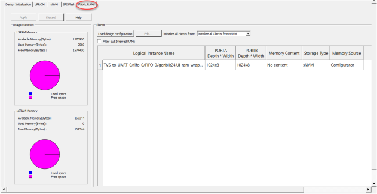
The following table describes the elements in the Flash RAMs tab.
Table 3-72 3-76 3-81 3-85. Elements in the Flash RAMs Tab
Element
Description
Load design configuration button
Resets all Fabric RAM clients to the initial configuration that was in effect the first time you clicked Apply. Clicking this button overrides any subsequent commands you applied and resets the Fabric RAM client's table.
In the Fabric
RAMs tab, click the Initialize all clients
from drop-down list, and then select the client you want to
initialize (see the following figure). Your selection appears in the
Storage Type column in the Fabric RAMS
client table.
Note: Selecting User Selection indicates that each Fabric RAM
client will be configured separately.
Table 3-87. Fields in the Edit Fabric RAM Initialization Client Dialog Box
Option
Description
Client name
Read-only field that shows the name of the client.
Physical Name
Read-only field that shows the physical name of the client.
RAM Initialization Options
Choices are:
Content from file: Click the Browse button to go to the location of a memory file, and then import the file to the memory block. By default, the same memory file specified in the memory configurator is used. Supported memory file formats are:
Intel-HEX (*.hex)
Motorola (*.s)
Simple-Hex (*.shx)
Microsemi-Binary (*.mem)
Content Filled with 0s: Memory block is filled with zeros for initialization.
No Content: Memory block is not initialized.
Optimize for
Read-only field.
Storage Type
If you change the storage type for a client to a selection other than the one previously chosen for all clients, the Initialize all clients from value also changes. Choices are:
PolarFire SoC users can use the eNVM tab to manage and configure
eNVM clients. Libero SoC supports 512 pages.
The procedures for adding, editing, and deleting eNVM clients are similar as those for
adding, editing, and deleting sNVM clients, except that you can add only Plaintext Boot
Mode 1 and Plaintext Boot Mode 3.
In the
eNVM tab, click the Add
drop-down list, and then select the client you want to add (see the following
figure).Figure 3-137 3-157. eNVM Client
Selections
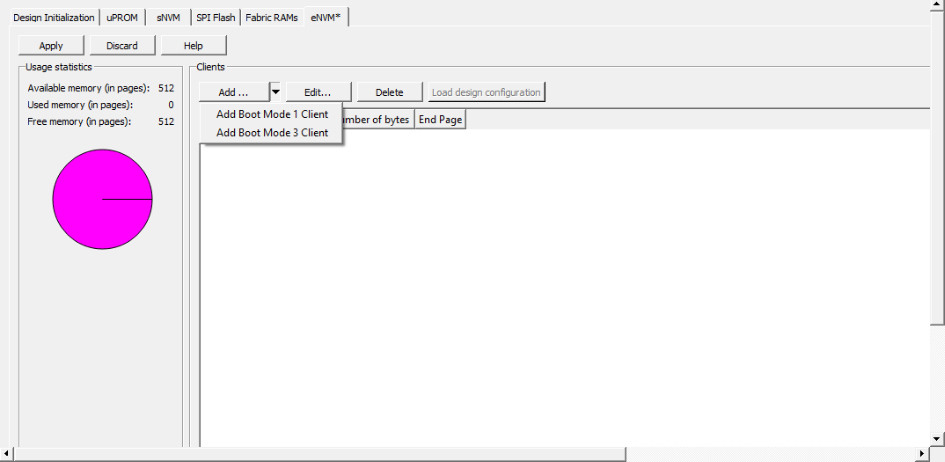
Complete the fields in the dialog
box, and then click OK (see the following sections).
In this Boot mode, the Core Complex boots directly from a specified address in eNVM with no authentication. The start page of Boot mode 1 client cannot be modified.
Note: The eNVM memory can have one client only: Boot
Mode 1 or Boot Mode
3.
Table 3-78 3-88 3-90. Fields in the Boot Mode 1 Client Dialog
Box
Field
Description
Client name
Read-only field that shows the name of the eNVM client.
Content from file
Navigate to and specify a file whose content will be used to fill
the eNVM.
Note: If you
select the Intel-HEX format, the Base address specified is
subtracted from user address records. Intel-Hex files have
Extended Linear and Extended Segment addresses. The Complete
Starting address of the Linear or Segment address in the Hex
file must be specified. For example, if the Intel-Hex file has
the Extended Linear address 2022, specify the base address
20220000.
Format
Memory file types.
Choice
is Intel-Hex. The Intel-Hex file is generated using
SoftConsole.
Base Address
Read-only field that shows the base address that is subtracted
from the user address records for Intel-Hex files.
Start page
Read-only field that shows the start page, in decimal notation,
of the eNVM client. eNVM client address starts at page boundaries.
If there are multiple eNVM clients, then their start page cannot be
the same. Otherwise, a warning message appears.
Range: 0–220
(decimal)
Number of bytes
Read-only field that shows the total number of bytes to populate
the eNVM. The value is shown in decimal notation. If the number of
bytes exceeds the memory size of the eNVM, an out-of-bounds warning
message appears.
Range: 1–47376
Include this client in eNVM digest calculation
Check to include this client in the eNVM digest calculation if
the client is updated via bitstream (JTAG, SPI slave, or SPI master
programming). Client must not be included if it is updated using any
other methods. If included, this client page(s) will be checked
while running the VERIFY_DIGEST action.
3.8.2.6.1.2 Settings for Boot Mode 3 Clients (PolarFire SoC)
PolarFire SoC supports Boot mode 3. In this Boot mode, you specify the start page in
eNVM. You must specify the public key X and Y. See the following table.
Table 3-89. Public Key Coordinates
Field
Description
Public Key X coordinate
Secure Boot mode 3 public key elliptical curve point X coordinate
Public Key Y coordinate
Secure Boot mode 3 public key elliptical curve point Y coordinate
Note: An eNVM client can have one client only: Boot Mode 1 or Boot Mode 3.
Table 3-78 3-88 3-90. Fields in the Boot Mode 3 Client Dialog
Box
Field
Description
Client name
Read-only field that shows the name of the eNVM client.
Content from file
Navigate to and specify a file whose content will be used to fill
the eNVM.
Note: If you
select the Intel-HEX format, the Base address specified is
subtracted from user address records. Intel-Hex files have
Extended Linear and Extended Segment addresses. The Complete
Starting address of the Linear or Segment address in the Hex
file must be specified. For example, if the Intel-Hex file has
the Extended Linear address 2022, specify the base address
20220000.
Format
Memory file types. Choice is Intel-Hex. The Intel-Hex file is
generated using SoftConsole.
Base Address
Read-only field that shows the base address that is subtracted
from the user address records for Intel-Hex files.
Start page
Read-only field that shows the start page, in decimal notation,
of the eNVM client. eNVM client address starts at page boundaries.
If there are multiple eNVM clients, their start page cannot be the
same; otherwise, a warning message appears.
Range: 0–220
(decimal)
Number of bytes
Read-only field that shows the total number of bytes to populate
the eNVM. The value is shown in decimal notation. If the number of
bytes exceeds the memory size of the eNVM, an out-of–bounds warning
message appears.
Range: 1–47376
Public Key X
A unique secret number is generated and known only to the
generated person. For more information, see x9.org/.
Public Key Y
A number that corresponds to a private key, but does not need to
be kept secret. The public key can be used to determine whether a
signature is genuine without requiring the private key to be
divulged. For more information, see x9.org/.
Include this client in eNVM digest calculation
Check to include this client in the eNVM digest calculation if
the client is updated via bitstream (JTAG, SPI slave, or SPI master
programming). Client should not be included if it is updated using
any other methods. If included, this client page(s) will be checked
when running the VERIFY_DIGEST action.
The following figure shows the eNVM Clients table.
Figure 3-160. eNVM Clients Table
The following table lists the eNVM clients you initialize. Each eNVM client appears on its own
row. After you add an eNVM client, you can select it in this table to edit the
client.
Table 3-91. Columns in eNVM Clients
Table
Column
Description
Client Name
Name you gave to the client.
Start Page
Starting page, you gave to the client.
Number of bytes
Number of bytes in the client.
End page
Ending page that Libero SoC determined based on the start page
you provided.
Client is always placed in sNVM. The default start address is
either 0xca00 (page 202), or 0xdb00 (page 219) if Broadcast
instructions to initialize RAM’s to zero’s is disabled in the
Design Initialization tab.
Second stage initialization client
Client is created when there are PCIe blocks or Transceiver
blocks in the design. The client is always placed in sNVM at the
start address you specified in the Design Initialization tab of
the Configure Design Initialization Data and Memories
tool.
Third stage initialization client
Client is created only when there are Fabric RAMs in the
design. The client can be placed in any uPROM, sNVM, or SPI
memories at a start address you specify. You can specify the
target memory for each Fabric RAM separately or for all Fabric
RAMs at once in the Fabric RAMs tab, and then specify the start
address of the target memory in the Design Initialization tab of
the Configure Design Initialization Data and Memories tool.
If
there are PCIe or XCVR blocks used in the design along with
Fabric RAMs with target memory type set to sNVM, a combined
initialization client is created for sNVM that has the
initialization sequence/instructions for the PCIe or XCVR
blocks followed by Fabric RAM.
If you reserved space in the uPROM Configurator and want to make changes to the uPROM clients
after Place and Route, use the Update uPROM Memory Content tool. After you update the
uPROM memory content, you do not need to rerun Place and Route.
To update the uPROM memory content:
In the Design Flow window,
right-click Update uPROM Memory Content and choose
Configure Options.Figure 3-161. Update uPROM Memory
Content
When the uPROM Update Tool appears,
right-click the Memory Client you want to update and choose
Edit.Figure 3-162. uPROM Update Tool
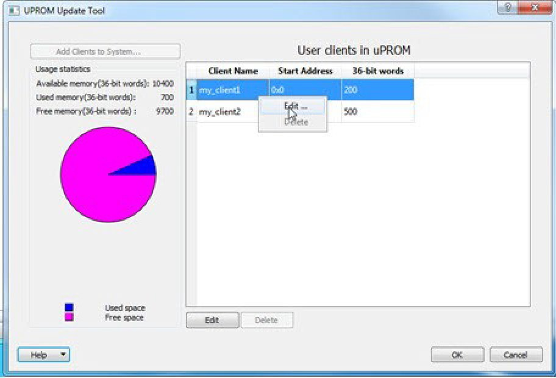
When the Edit Data Storage Client dialog box appears, you can make the following
changes:
Rename a client
Change the memory content,
memory size and start address of the client
Decide whether use content
for simulation
Figure 3-163. Edit Data Storage Client
Dialog Box
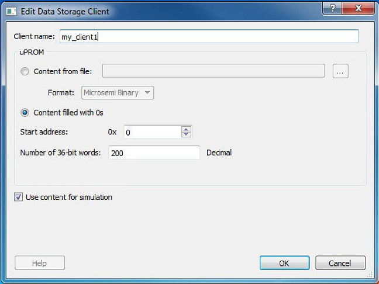
When you finish, click OK.
Note: You cannot use the Update uPROM tool to
add or delete a client. To add or delete a client, use the uPROM Configurator to
reconfigure your clients and regenerate your uPROM component and your design.
3.8.5 Update eNVM Memory Content (SmartFusion 2 and
IGLOO 2)
The eNVM Update dialog box allows you to update your eNVM content without having to rerun Compile and Place and Route. It is useful, for example, if you reserved space in the eNVM configurator within the MSS for firmware development. Use the eNVM Update dialog box after you complete your firmware development and want to incorporate your updated firmware image file into the project.
To display the eNVM Update dialog box, right-click Update eNVM Memory Content and choose Configure Options or double-click Update eNVM Memory Content to display the dialog box.
Figure 3-164. eVNM Update Dialog Box
Note: To disable a client for programming, modify the client and select No Content (Client is a placeholder and will not be programmed). The content from the memory file, serialization data file, or auto- incremented serialization content will be preserved if you later decide to enable this client for programming. Clients disabled for programming will not be included in the generated bitstream and will not be programmed.
The Modify Data Storage Client dialog box allows you to import a memory file, fill eNVM
content with zero’s, and assign no content (eNVM as a placeholder). The last option
excludes the client from the programming bitstream and does not program the client. You
can also specify the start address where the data for that client starts, the word size,
and the number of words to reserve for the data storage client.
To display the Modify Data Storage Client dialog box, double-click the storage client.
Note: You cannot add, delete, or rename a
data storage client at this point using the Modify Data Storage Client dialog box. To
make such changes, return to the MSS or System Builder eNVM configuration step.
Figure 3-165. Modify Data Storage Client Dialog Box
If you completed Place and Route and imported a memory file for the eNVM content, you do not have
to rerun Compile or Place and Route. You can program or export your programming file
directly. Programming generates a new programming file that includes your updated eNVM
content.
3.8.7 Modify Serialization Client (SmartFusion 2 and
IGLOO 2)
The Modify Serialization Client dialog box allows you to import a memory file, fill eNVM content with zero’s, and assign no content (eNVM as a placeholder). The last option excludes the client from the programming bitstream and does not program the client. You can also specify the start address where the data for that client starts, the word size, and the number of words to reserve for the data storage client. You can also specify the start address where the data for the serialization client starts, the number of pages, and the maximum number of devices into which you want to program serialization data.
Setting a maximum number of devices to program for Serialization clients generates a programming bitstream file that has serialization content for the number of devices specified. The maximum number of devices to program must match for all serialization clients. To program a subset of the devices during production programming, use the FlashPro Express tool, which allows you to select a range of indices desired for programming for that serialization programming session. For more information, see the Macro Library User Guide for SmartFusion2 and IGLOO2.
To open the Modify Serialization Client dialog box, double-click the serialization client.
Note: You cannot add, delete, or rename a serialization client in the Modify serialization client dialog box. Go to the eNVM configurator inside the MSS/HPMS Configurator or the System Builder Memory page (eNVM tab) to make these changes.
If you completed Place and Route and imported a memory file for the eNVM content, you do not have to rerun Compile or Place and Route. You can program or export your programming file directly. Programming will generate a new programming file that includes your updated eNVM content.
3.8.8 Configuring I/O States During JTAG
Programming
In the Libero SoC Design Flow window, expand the Program Design and double-click
Configure I/O States During JTAG Programming. The default
state for all I/Os is Tri-state.
Use the following procedure to specify I/O states during programming or while exporting a bitstream.
Click a column header to sort the entries by that header, and then select the I/Os you want to modify.
Set the I/O output state using either basic I/O
settings to accept the default I/O settings for your pins (see the following
table) or custom I/O settings to customize the settings for each pin.
Table 3-93. Basic I/O State
Settings
Setting
Description
1
I/O is set to drive out logic High.
0
I/O is set to drive out logic Low.
Last Known State
I/O is set to the last value that was driven out prior
to entering the programming mode, and then held at that
value during programming.
Z - Tri-State
(PolarFire) I/O is tristated with weak pull-up (10k
Ω).
Figure 3-167. I/O States During
Programming Window
The I/O States During Programming dialog box allows you to specify custom settings for I/Os in
your programming file. This is useful if you want to set an I/O to drive out specific
logic, or if you want to use a custom I/O state to manage settings for each Input,
Output Enable, and Output associated with an I/O.Figure 3-168. I/O States During Programming
Dialog Box
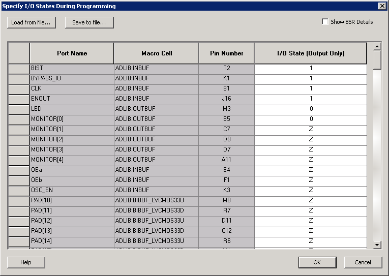
Table 3-94. Elements in the I/O States During Programming Dialog Box
Element
Description
Load from file button
Loads an I/O settings (*.ios) file you can use
to import saved custom settings for your I/Os. The exported IOS
file has the following format:
Used I/Os
have a file entry with the following
format:
In the preceding formats, <value> is one
of the values shown in the key in the Default I/O Output Settings following
table.
Save to file button
Saves your I/O Settings File (*.ios) for future
use. This is useful if you set custom states for your I/Os and want
to use them again later with a PDC file.
Port Name column
Names of all the ports in your design.
Macro Cell column
I/O types, such as INBUF, OUTBUF, PLLs, and so on.
Pin Number column
Package pin associated with the I/O.
I/O State (Output Only) column
Sets your I/O states during programming (see the following Default I/O Output Settings table). This
column header changes to Boundary Scan Register if you select the
Show BSR Details check box.
Boundary Scan Registers - Enabled with Show BSR Details
Sets your I/O state to a specific output value during programming
and allows you to customize the values for the Boundary Scan
Register (Input, Output Enable, and Output). You can change any
Don't Care value in Boundary Scan Register States without
changing the Output State of the pin (as shown in the following
BSR Details I/O Output Settings
table).
Examples:
To Tri-State a pin during programming, set Output Enable
to 0; the Don't Care indicates that the other two values
are immaterial.
To have a pin drive a logic High and have a logic 1
stored in the Input Boundary scan cell during
programming, set all the values to 1.
Table 3-95. Default I/O Output
Settings
Output State
Settings
Input
Control (Output Enable)
Output
Z (Tri-State)
1
0
0
0 (Low)
1
1
0
1 (High)
0
1
1
Last_Known_State
Last_Known_State
Last_Known_State
Last_Known_State
Table Key:
1: I/Os are set
to drive out logic High.
0: I/Os are set
to drive out logic Low.
Last_Known_State:
I/Os are set to the last value that was driven out prior to
entering the programming mode, and then held at that value
during programming.
Z: Tri-State: I/O
is tri-stated.
Table 3-96. BSR Details I/O Output
Settings
Output State
Settings
Input
Output Enable
Output
Z (Tri-State)
Don't Care
0
Don't Care
0 (Low)
Don't Care
1
0
1 (High)
Don't Care
1
1
Last Known State
Last State
Last State
Last State
Table Key:
1: I/Os are set
to drive out logic High.
0: I/Os are set
to drive out logic Low.
Don't Care: Don’t
Care values have no impact on the other settings.
Last_Known_State:
I/Os are set to the last value that was driven out prior to
entering the programming mode, and then held at that value
during programming.
Z: I/O is
tri-stated.
The following figure shows an example of Boundary Scan Register settings.
Figure 3-169. I/O States During Programming
Dialog Box
The program options you can configure depend on the device you are programming. The
following topics describe the options available to all product families.
To configure programming options, from the Design Flow window, double-click
Configure Programming Options or right-click it and choose
Configure Options. The Configure Programming Options dialog
box appears with the appropriate options (see the remaining topics in this section for
more information).
The following figure shows the programming options for PolarFire. The table following the figure
describes the options.
Note: SPI file programming for Auto
Programming, Auto Update (IAP), and IAP/ISP Services can program security only one time
with the master file. Update files cannot update the Security settings. In addition,
Silicon signature and Tamper Macro can be programmed with the master file only and
cannot be updated.
Figure 3-171 3-173. PolarFire Programming Options
Table 3-97 3-99. PolarFire Programming Options
Option
Description
Design name
Read-only field that identifies your design.
Design version
Design version to be programmed into the device. This value is also
used for Back Level protection in the Update Policy step of the Configure Security tool.
Black Level version
Back Level version to be programmed to the device. This value must
be less than or equal to the Design version number. This value is used
for Back Level protection (if enabled) in the Update Policy step of the Configure Security tool.
Silicon signature
32-bit user configurable silicon signature to be programmed into the
device. This field can be read from the device using the JTAG (IEEE
1149-1) USERCODE instruction or by running the DEVICE_INFO programming
action.
3.8.9.2 SmartFusion 2 and IGLOO 2 Programming
Options
The following figure shows the programming options for SmartFusion 2 and IGLOO 2. The table
following the figure describes the options.
Note: SPI file programming for Auto Programming, Auto Update (IAP), and IAP/ISP Services can program security only one time with the master file. Update files cannot update the Security settings. In addition, Silicon signature and Tamper Macro can be programmed with the master file only and cannot be updated.
Figure 3-172. SmartFusion 2 and IGLOO 2 Programming
Options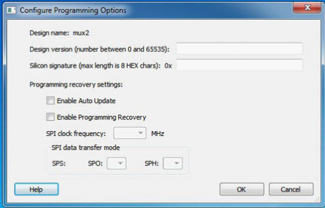
Table 3-98. SmartFusion 2 and IGLOO 2 Programming
Options
Option
Description
Design name
Read-only field that identifies your design.
Design version
Design Version used for Auto Update Programming or for Back Level protection. Enter a number between 0 and 65535 for the design version.
Silicon signature
Enter up to eight hexadecimal characters.
Enable Auto Update
Click to auto update the SPI update image at power-up. Auto update compares your update SPI image Design Version against the Design Version programmed in the device, and then auto updates the programming on your SPI update Image if the:
Device is programmed
and
Update SPI image Design Version is greater than the Design Version on the device
Auto Recovery also allows the device to automatically reprogram itself if there is a power failure during programming.
Note: If this option is enabled, the programming recovery option must also be enabled, which disables this check box.
Enable Programming Recovery
Click to enable programming recovery in case a power failure occurs during programming.
Note: Programming Recovery cannot be updated with
_UEK1 or _UEK2 programming files. Only the master programming file
can be used.
Note: SPI file programming for Auto Programming, Auto Update (IAP), Programming Recovery, and IAP/ISP Services can program security only once with the master file. Update files cannot update the security settings. In addition, Programming Recovery, Silicon Signature, Firewall, and Tamper Macro can be programmed with the master file only and cannot be updated.
The following figures show the programming options for RTG4. The tables following the figure describe the elements and options.
Figure 3-171 3-173. RTG4 Programming Options with Custom SelectedFigure 3-174. RTG4 Programming Options with One-time Programmable (OTP) Selected
Table 3-97 3-99. RTG4 Programming Elements for Custom and One-time Programmable
Element
Description
Design name field
Read-only field that identifies your design.
Design version field
Enter a number between 0 and 65535 for the design version.
Silicon signature field
Enter up to eight hexadecimal characters.
Programming Bitstream Settings field
Choices are:
Custom: Allows you to customize the settings using the check box options below these radio buttons (see the following table).
One-time programmable (OTP): Makes the device one-time programmable and disables the check box options. After programming the device, you cannot erase or reprogram the device. You can run programming actions VERIFY and VERIFY_DIGEST, use SmartDebug to debug with probes, and read the digest of the Fabric
Selected settings
Summarizes the settings configured and informs you about the expected behavior of the device with these options.
Reset to default button
Click to reset settings to their default values.
Table 3-100. RTG4 Programming Options for Custom Only
Option
Description
Enable System Controller Suspend mode
Check to enable System Controller Suspend mode when TRSTB is LOW during device power-up. You can exit System Controller Suspend mode by driving TRSTB HIGH during device power-up.
Default: Disabled (not checked)
Note: When this option is selected, the JTAG interface is disabled to ensure proper hardening during System Controller Suspend mode.
Disable JTAG interface
Check to disable the JTAG interface when TRSTB is LOW during device power-up. You can enable the JTAG interface by driving TRSTB HIGH during device power-up.
Default: Enabled (not checked)
Note: If you select this option, check the following options: Fabric Erase/Write/Verify, Disable Probe Read/Write, and Disable Digest Check.
Disable SPI interface
Unavailable because the SPI interface is not supported for RGT4.
Disable Fabric Erase/Write/Verify
Check to disable Fabric Erase/Write/Verify when TRSTB is LOW during device power-up. You can enable Fabric Erase/Write/Verify by driving TRSTB HIGH during device power-up.
Default: Enabled (not checked)
Disable Probe Read/Write
Check to disable Probe Read/Write when TRSTB is LOW during device power-up. You can enable Probe Read/Write by driving TRSTB HIGH during device power-up.
Default: Enabled (not checked)
Note: For this option to be available, check the Manage Constraints tool to reserve dedicated probe pins. Otherwise, pins can be used as regular user I/Os.
Disable Digest Check
Check to disable all Fabric reads, such as verify digest, read digest, or reading design or programming information in DEVICE_INFO when TRSTB is LOW during device power-up. You can enable Digest Check by driving TRSTB HIGH during device power-up.
Important: If you use an SPI file generated with Libero v2022.2 or
later version with custom security to create or edit the SPI
bitstream client, then an error message tells you that the SPI
file cannot contain security.
3.8.10.1 Configure Security Wizard (PolarFire and PolarFire SoC)
The Configure Security Wizard guides PolarFire and PolarFire SoC users through the procedure for
configuring custom security settings. The wizard consists of the following five
steps:
Figure 3-175. Configure Security WizardThe following table describes the elements in the Configure Security Wizard.
Table 3-101. Elements in the Configure Security Wizard
Element
Description
Summary window
Displays the summary of the current configuration settings. The window scrolls to the current page as you move from page to page.
Security key mode
Two security key modes are available:
Bitstream encryption with default key: Use the default encryption key for security. The Next and Back buttons are disabled. All steps are disabled. Custom User Keys and security settings are disabled.
Custom security Mode: Configures custom security keys and settings. All steps are enabled, as are the Next and Back buttons.
Back
Click to return to previous step.
Next
Click to proceed to next step.
Finish
Click to skip steps and complete the configuration.
In step 2 of the Configure Security Wizard, you disable field updates and specify field-update
protection parameters. Field updates are enabled by default.Figure 3-177. Configure Security Wizard -
Update Policy
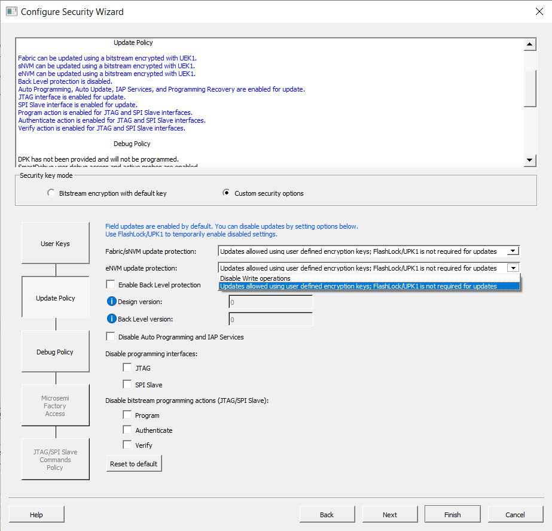
The following table describes the options in this step.
Table 3-103. Options in the Update Policy Step
Option
Description
Fabric/sNVM update protection
Choices are:
Disable Erase/Write operations.
Note: The field-update files encrypted
with UEK1 and UEK2 include plaintext FlashLock/UPK1.
Updates allowed using user-defined encryption keys: FlashLock/UPK1 is not required for updates.
eNVM update protection
(PolarFire® SoC only) Updates allowed using user-defined encryption keys;
FlashLock/UPK1 is not required for updates.
Enable Back Level protection
When checked, a field update design being programmed must be a version higher than the Back Level version value in the programmed device. This safeguard prevents field update designs with back level versions less than or equal to the design version programmed in the device.
Design version (number between 0–65535): Display
the current Design version set in the Configure Programming
Options tool.
Back Level version (number between 0–65535):
Display the current Back Level version set in the Configure
Programming Options tool). Back Level version uses the
Design version value to determine which bitstreams are
allowed for programming. The Back Level version must be
smaller than or equal to Design version.
Note: If Back Level Protection is disabled and Back Level version is greater than zero, Generate Bitstream and Export Bitstream tools error out.
The examples in the following tables show Back Level protection enabled in the Configure Security tool.
Disable Auto Programming and IAP Services
When this option is selected, Auto Programming, Auto Update, IAP Services, and Programming Recovery are disabled. FlashLock/UPK1 unlocking is only available for JTAG and SPI Slave interfaces.
Note: If a PolarFire SoC user disables this option
manually, the Enable One-way passcode options
in the Configure Security Wizard is not available
and SPI files cannot be exported.
Disable programming interfaces
You can disable the following programming interfaces:
JTAG
SPI Slave
You cannot disable Auto Programming and IAP Services and both
the programming interfaces. If you try, an error message
appears.
If you check JTAG, Libero
checks the following options automatically:
Disable UTAG command through JTAG
interface
Disable JTAG boundary scan
If you enable back the JTAG programming interface by
unchecking JTAG, the options
Disable UTAG commands through JTAG
interface and Disable JTAG boundary
scan remain checked.
Debugging is enabled by default. Use this page to configure Debug Protections.
Figure 3-178. Configure Security Wizard
Table 3-106. Elements in Debug Policy
Step
Element
Description
Debug with DPK (Debug Pass Key)
Protect Debug with a 256-bit (64-character HEX) Debug Pass Key. Enter
the key in the field or click the padlock icon at the far right to
generate a random key. This key is optional if you want a separate
passkey to enable access to disabled debug features during one debugging
session.
If the DPK key is entered, check at least one
option.
SmartDebug Access Control
All the following are enabled by default for SmartDebug access. Check
to disable access.
Disable User
Debug Access and Active Probe
Disable Live
Probe
Disable sNVM
Warning: Leaving SmartDebug access control enabled on production devices
will allow anyone to debug or access active probes, access Live
Probe, or read the content of sNVM.
Three additional
options are:
Disable UJTAG
command through JTAG Interface.
Disable JTAG
(1149.1) boundary scan: Disables JTAG (1149.1) commands. The
following JTAG commands will be disabled: HIGHZ, EXTEST, INTEST,
CLAMP, SAMPLE, and PRELOAD. I/Os will be tri-stated when in JTAG
programming mode and BSR control during programming is disabled.
BYPASS, IDCODE, and USERCODE instructions will remain
functional.
Disable reading
temperature and voltage sensor (JTAG/SPI Slave): The summary at
the top of the page displays the results of the selection.
In step 4 of the Configure Security Wizard, you configure the policy for Microsemi test mode
access. Field updates are enabled by default. Test mode access is required for failure
analysis on the device.Figure 3-179. Configure Security Wizard -
Microsemi Access Policy
Table 3-107. Option in the Microsemi Access
Policy Step
Option
Description
Microsemi factory access level
Choices are:
Allow factory
test mode access: Do not use this setting for production
devices. (default)
In the Design Flow window, double-click Configure Security to open the
Security Policy Manager dialog box and customize the security settings in your
design.
Use this dialog box to set your User Keys, Security Policies, and Microchip factory test mode
access level.
Note: Microchip-enabled default bitstream
encryption key modes are disabled after user security is programmed.
Bitstream encryption with
default key- Encrypt bitstream files with Microchip default key
(pre-placed key in silicon). When this option is selected, user keys, security,
and Microchip factory test mode access level configurations are disabled.
Enable custom security
options- Enables you to set User Keys, Security Policies and Microchip
factory test mode access level (see the following description).
User keys and Security policies protection
Write-protect using
FlashLock/UPK1 - Protect UEK1 (User Encryption Key 1), UEK2
(User Encryption Key 2), DPK (Debug Pass Key), and Security Policies using
FlashLock/ UPK1. Protect modification to UEK3 via bitstream using
FlashLock/UPK1. SRAM-PUF System services can still modify UEK3 after programming
Security settings.
Note: UEK2
(User Encryption Key2) is protected by UPK2 (User Pass Key 2). UEK3 is only
available for M2S060, M2GL060, M2S090, M2GL090, M2S150, and M2GL150 devices.
Permanently
write-protect - Permanently protect UEK1 (User Encryption Key
1), UPK2 (User Pass Key 2), UEK2 (User Encryption Key 2), DPK (Debug Pass Key),
Security Policies, and Microchip factory test mode access level. Permanently
protect modification to UEK3 via bitstream. Note that even after programming
Security settings, SRAM-PUF System services can still modify UEK3 This setting,
once programmed will not be modified in the device. Microchip enabled default
bitstream encryption key modes are permanently disabled as well.
Note: When this option is selected,
you cannot specify the FlashLock/UPK 1 and UPK2 (User Pass Key 2) value
because the value cannot be used to unlock the corresponding protected
features. UEK3 is only available for M2S060, M2GL060, M2S090, M2GL090,
M2S150, and M2GL150 devices.
Microchip Factory Test Mode Access
Level
Allow factory test
mode access - Allows access to Microchip factory test mode.
Protect factory test
mode access using FlashLock/UPK1 - Protects access to Microchip
factory test mode using Flashlock/ UPK1.
Permanently protect
factory test mode access - Permanently locks access to Microchip
factory test mode.
Note: When this option is selected, User
Key Set 2 is permanently write-protected. Once programmed, User Key Set 2 cannot be
changed in the device. You can specify UEK2 (User Encryption Key 2). However, you
cannot specify UPK2 (User Pass Key 2) because the value cannot be used to unlock
User Key Set 2.
Security Policies
Update Policy
- Sets your Fabric, eNVM and Back Level protections. It also allows
you to disable access to certain programming interfaces. See the Update Policy topic for more information.
Note: If Update Policy is enabled
and Fabric update is protected by UPK1:
Fabric update is disabled for Auto Programming, IAP/ISP services, Programming
Recovery and Auto update. FlashLock/UPK1 unlocking is only available for JTAG and
SPI slave programming. See the following example.
Figure 3-183. Update Policy Dialog Box
Denoting Fabric Update Protection by Flashlock/UPK1Figure 3-184. Security Policy Manager with
Update Policy Description for Fabric Update Protection by Flashlock/UPK1
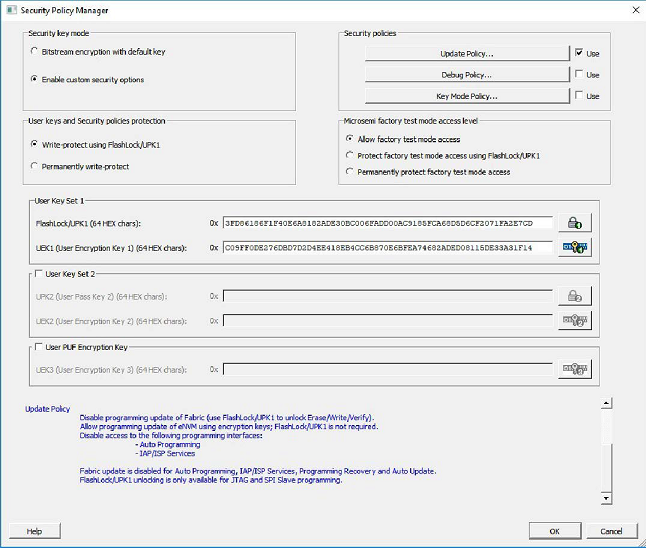
Debug Policy
- Enables and sets your Debug Pass Key and debug options. See the
Debug Policy topic for more information.
Key Mode Policy
- Configures the key mode to enable or disable. See the Key Mode Policy topic for more information.
Configuring User Keys
User Key Set 1
is required. User Key Set 1 includes FlashLock/UPK1 (User Pass Key
1) and UEK1 (User Encryption Key 1).
User Key Set 2
is optional. User Key Set 2 includes UPK2 (User Pass Key 2) and UEK2
(User Encryption Key 2). Note that User Pass Key 2 (UPK2) protects only User
Encryption Key 2 (UEK2).
User PUF Encryption
Key is optional. User PUF Encryption Key includes UEK3 (User
Encryption Key 3).
Note: UEK3 is only available for M2S060,
M2GL060, M2S090, M2GL090, M2S150, and M2GL150 devices.
This dialog box enables you to specify components that can be updated in the field, and their field-update protection parameters.
Choose your protection options from the drop-down menus; click the appropriate check box to set
your programming protection preferences.
Fabric Update Protection
Use FlashLock/UPK1 to unlock Erase/Write/Verify operations- Select this option to require UPK1 to erase, write, or verify the Fabric.
Note: Fabric update is disabled for Auto Programming, IAP/ISP services, Programming
Recovery, and Auto update. FlashLock/UPK1 unlocking is only available for JTAG and SPI
slave.
Updates allowed using UEK1 or UEK2 or UEK3; FlashLock/UPK1 is not required for updates - Encrypted update is allowed with either UEK1 or UEK2 (if enabled).
Note: UEK3 is only available for M2S060,
M2GL060, M2S090, M2GL090, M2S150, and M2GL150 devices.
eNVM Update Protection
Use FlashLock/UPK1 to unlock Write/Verify/Read operations- Select this option to require UPK1 to write, verify or read to the eNVM.
Note: eNVM update is disabled for Auto
Programming, IAP/ISP Services, Programming Recovery, and Auto Update. FlashLock/UPK1
unlocking is only available for JTAG and SPI Slave programming.
Updates allowed using UEK1 or UEK2 or UEK3; Flashlock/UPK1 is not required for updates - Encrypted update is allowed with either UEK1 or UEK2 (if enabled) or UEK3 (if enabled).
Note: UEK3 is only available for M2S060,
M2GL060, M2S090, M2GL090, M2S150, and M2GL150 devices.
Back Level protection - When enabled, a design being loaded must be of a version higher than the Back Level version value in the programmed device.
Back Level Protection- Limits the design
versions that the device can update. Only programming bitstreams with Designer
Version greater than the Back Level version are allowed for programming.
Design version - Displays the
current Design version (set in the 3.8.9 Configuring Programming Options). Back level
uses the Design version value to determine which bitstreams are allowed for
programming.
Back Level Bypass - If selected, design is
programmed irrespective of Back Level version.
Note: Back Level Bypass should be set if you
allow programming recover with recovery image lower than the Back Level version
selected. Alternatively, you should update the design version of the recovery image so
that it is always greater than the Back Level version.
Disable Access to the Following Programming Interfaces
These settings protect the following programming interfaces:
Note: When the Permanently write-protect option is selected for User keys and Security
policies protection in SPM, the dialog box informs you of features that are no longer
reprogrammable. In this case, if Use FlashLock/UPK1 to unlock option is selected for
Fabric/eNVM update protection then Fabric/eNVM will be One Time Programmable.
Debug access to the embedded systems can be
controlled via the customer Debug Policy.Figure 3-186. Debug Security Policy Dialog
Box
Protect Embedded Debug with DPK
(Debug Pass Key)
Restrict UJTAG access - Restricts access to UJTAG; DPK is required for access.
Restrict Cortex M3 debug (SmartFusion 2 Only) - Restricts Cortex M3 debug/SoftConsole use;
DPK is required for debug.
SmartDebug Access Control
Access control available during debug mode.
Full Access (No restrictions to SmartDebug architecture; DPK is not required)- Enables full debug access to eNVM, uSRAM, LSRAM, eSRAM0/1, DDRAM and Fabric probing.
No debug (Restrict read/write access to SmartDebug architecture; DPK is required for read/write access) - Blocks all debug access to eNVM, uSRAM, LSRAM, eSRAM0/1, DDRAM and Fabric probing.
DPK (Debug Pass Key) (length is 64
HEX characters)
Specify a Debug Pass Key to unlock features protected by DPK.
Restrict external Fabric/eNVM design digest check request via JTAG and SPI. Use FlashLock/UPK1 to allow digest check. - Protects design digest check request with FlashLock/UPK1.
Disable debug access through JTAG (1149.1). - Disables JTAG (1149.1) test
instructions. The following JTAG test instructions will be disabled: HIGHZ, EXTEST,
INTEST, CLAMP, SAMPLE, and PRELOAD. I/Os will be tri-stated when in JTAG programming
mode and BSR control during programming is disabled. BYPASS, IDCODE, and USERCODE
instructions will remain functional.
3.10.2 Exporting Bitstreams(expand Handoff
Design for Production in the Design Flow window) creates the following files:
<filename>_master.(stp/svf/spi/dat) - Created when Enable custom security
options is specified in the 3.8.10 Configuring Security. This is the master programming file; it includes all programming
features enabled, User Key Set 1, User Key Set 2 (optionally if specified), and your
security policy settings.
<filename>_security_only_master.(stp /svf/spi/dat) – Created when Enable
custom security options is specified in the 3.8.10 Configuring Security. Master security
programming file; includes User Key Set 1, User Key Set 2 (optionally if specified), and
your security policy settings.
<filename>_uek1.(stp/svf/spi/dat) – Programming file encrypted with User
Encryption Key 1 used for field updates; includes all your features for programming
except security.
<filename>_uek2.(stp/svf/spi/dat) – Programming file encrypted with User
Encryption Key 2 used for field updates; includes all your features for programming
except security.
<filename>_uek3.(stp/svf/spi/dat) – Programming file encrypted with User
Encryption Key 3 used for field updates; includes all your features for programming
except security.
Note: UEK3 is available only for M2S060S,
M2GL060S, M2S090S, M2GL090S, M2S150S, and M2GL150S devices.
The Configure Bitstream dialog box allows you to select which components you wish to
program. Only features that are added to your design are available for programming. To
display the dialog box, right click Generate Bitstream in the
Design Flow window and choose Configure Options .
In the dialog box, the option Sanitize all sNVM pages in ERASE
action is supported for PolarFire and PolarFire SoC. The option is
enabled in the dialog box if the Fabric/sNVM option is selected.
If the design includes uPROM, it will be included in the Fabric.
Figure 3-189. Configure Bitstream
(PolarFire)PolarFire SoC devices also provide an eNVM option if eNVM
clients are present and being programmed.
Figure 3-190. Configure Bitstream with eNVM
Option (PolarFire SoC)
Observe the following guidelines:
Note:
Custom security is enabled if
security was configured.
All available features are
selected by default.
sNVM is always programmed with
Fabric for PolarFire devices. PolarFire SoC allows you to program either Fabric
with sNVM or sNVM only.
3.8.11.2 Configure Bitstream (RTG4, SmartFusion 2, and
IGLOO 2)
Right-click Generate Bitstream in the Design Flow window and choose Configure Options to open the Configure Bitstream dialog box.
The Configure Bitstream dialog box enables you to select which components you wish to program. Only features that are added to your design are available for programming. For example, you cannot select eNVM for programming if you do not have eNVM in your design.
The Generate Bitstream option generates the bitstream for use with the Run PROGRAM Action tool.
The tool incorporates the Fabric design, sNVM configuration, eNVM configuration (if configured)
and custom security settings (if configured) to generate the bitstream file. Before you
generate the bitstream, configure the bitstream. Otherwise, default settings with all
available features included are used. To display the Configure Bitstream dialog box,
expand Program Design, right-click Generate
Bitstream and choose Configure Options to select
the components you want to program. Only features that are added to your design are
available for programming. When the process is complete, a green check mark appears next
to the operation in the Design Flow window (as shown in the following figure) and
information messages appear in the Log window.
Observe the following guidelines:
If the design includes uPROM, it will be included in the Fabric.
The eNVM option will be
available for PolarFire SoC, SmartFusion 2, and IGLOO 2 devices only if eNVM
clients are present and being programmed.
Modifications to the Fabric design, sNVM configuration, eNVM configuration, or security settings will invalidate this tool and require regeneration of the bitstream file.
The Fabric programming data will be regenerated only if you make changes to the Fabric design, such as in the Create Design, Create Constraints, and Implement Design sections of the Design Flow window.
The Configure Actions and Procedures tool allows you to configure actions with optional or
recommended procedures for a Libero target device. The information is saved and can be
used by the Run Action tool.
Observe the following guidelines when using this tool:
Available actions and their procedures depend on current bitstream components selected in the Generate Bitstream and Configure Options tools.
Changing procedures for the action selected to run invalidates the Run Action tool
state. Changing any other action does not affect the Run Action tool state.
To run the Configure Actions and Procedures tool, from the Libero Design Flow window, expand
Program Design and double-click Configure Actions
and Procedures.Figure 3-193. Configure Actions and Procedures
The Configure Actions and Procedures dialog box opens. The actions and procedures shown depend on
the device family you use and the bitstream components selected in the Generate
Bitstream and Configure Options tools.Figure 3-194. Configure Actions and
Procedures Dialog Box
3.8.13.1 Programming File Actions and Supported Procedures
The following table lists programming file actions and descriptions.
Table 3-110. Programming File Actions
Action
Description
PROGRAM
Programs all selected family features:
FPGA
Array
Targeted sNVM
clients
Targeted eNVM
clients
Security
settings
ERASE
Erases the selected family features for:
FPGA
Array
Security
settings
VERIFY_DIGEST
Calculates the digests for the components (Custom Security, Fabric,
or sNVM or eNVM) included in the bitstream and compares them against
the programmed values.
VERIFY
Verifies all selected family features for:
FPGA
Array
Targeted sNVM
clients
Targeted eNVM
clients
Security
settings
ENC_DATA_AUTHENTICATION
Encrypted bitstream authentication data.
READ_IDCODE
Reads the device ID code from the device.
DEVICE_INFO
Displays the IDCODE, design name, checksum, and device security
settings and programming environment information programmed into the
device.
If you have a device programmer connected, double click Run PROGRAM Action to execute your program in batch mode with default settings.
CAUTION: Do not interrupt programming action when it runs as shown in the pop-up. Otherwise, it might damage the part.
If your programmer is not connected or if your default settings are invalid, then the Reports
view lists the errors. To select a programming action to run:
Right click Run PROGRAM Action and choose Select Action. The Select Action dialog box appears.
Figure 3-195. Select Action Dialog Box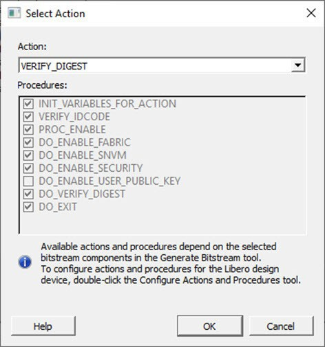
Select a programming action from the drop-down list and click OK.
Monitor related power supplies that cause the issue during programming, check for transients outside of Microchip specifications. See your device data sheet for more information on transient specifications.
Monitor JTAG supply pins during programming; measure JTAG signals for noise or reflection.
0x8032
Device is busy
5
Unstable VDDIx voltage level
Monitor related power supplies that cause the issue during programming, check for transients outside of Microchip specifications. See your device data sheet for more information on transient specifications.
0x8003
Failed to enter programming mode
5
Unstable voltage level
Signal integrity issues on JTAG pins DEVRST_N is tied to LOW
Monitor related power supplies that cause the issue during programming, check for transients outside of Microchip specifications. See your device data sheet for more information on transient specifications.
Monitor JTAG supply pins during programming; measure JTAG signals for noise or reflection.
Tie DEVRST_N to HIGH prior to programming the device.
0x8004
Failed to verify IDCODE
6
Incorrect programming file
Incorrect device in chain
Signal integrity issues on JTAG pins
Choose the correct programming file and select the correct device in the chain.
Measure JTAG pins and noise for reflection. If TRST is left floating, then add pull-up to pin.
Reduce the length of Ground connection.
0x8005
0x8006
0x8007
0x8008
0x8009
Failed to verify FPGA Array
Failed to verify Fabric Configuration
Failed to verify Security Failed to verify sNVM Failed to verify eNVM
11
Device is programmed with a different design, or the component is blank
Unstable voltage level
Signal integrity issues on JTAG pins
Verify that the device is programmed with the correct data/design.
Monitor related power supplies that cause the issue during programming, check for transients outside of Microchip specifications. See your device data sheet for more information on transient specifications.
Monitor JTAG supply pins during programming; measure JTAG signals for noise or reflection.
0x8013
External digest check via JTAG/SPI Slave is disabled.
-18
External Digest check via JTAG/SPI Slave is disabled
Need to use a bitstream file which has a valid FlashLock/UPK1 to enable external digest check via JTAG/SPI Slave.
0x8015
FPGA Fabric digest verification: FAIL
Deselect procedure DO_ENABLE_FABRIC to remove this digest check.
-20
FPGA Fabric is either erased or the data are corrupted or tampered with
If the Fabric is erased, deselect procedure DO_ENABLE_FABRICfrom action VERIFY_DIGEST
0x8016
sNVM digest verification: FAIL
Deselect procedure DO_ENABLE_SNVM to remove this digest check.
-20
sNVM is either erased or the data are corrupted or tampered with
If the sNVM is erased, deselect procedure DO_ENABLE_SNVM from action VERIFY_DIGEST
0x8018
User security policies segment digest verification: FAIL
Deselect procedure DO_ENABLE_SECURITY to remove this digest check.
-20
Security segment is either erased or the data are corrupted or tampered with
If the security is erased, deselect procedure DO_ENABLE_SECURITY from action VERIFY_DIGEST
0x8019
UPK1 segment digest verification: FAIL
Deselect procedure DO_ENABLE_SECURITY to remove this digest check.
-20
UPK1 segment is either erased or the data are corrupted or tampered with
If the UPK1 is erased, deselect procedure DO_ENABLE_SECURITY from action VERIFY_DIGEST
0x801A
UPK2 segment digest verification: FAIL
Deselect procedure DO_ENABLE_UKS2 to
remove this digest check.
-20
UPK2 segment is either erased or the data are corrupted or tampered with
If the UPK2 is erased, deselect procedure DO_ENABLE_UKS2 from action VERIFY_DIGEST
0x801B
Factory row and factory key segment digest verification: FAIL
-20
Factory row and factory key segment is erased through zeroization or the data has been corrupted or tampered with
Fabric configuration segment is either erased or has been corrupted or tampered with
If the Fabric configuration is erased, deselect procedure DO_ENABLE_FABRIC from action VERIFY_DIGEST
0x8052
UEK1 segment digest verification: FAIL
Deselect procedure DO_ENABLE_UEK1 to remove this digest check.
-20
UEK1 segment is either erased or the data has been corrupted or tampered with
If the UEK1 is erased, deselect procedure DO_ENABLE_UEK1 from action VERIFY_DIGEST
0x8053
UEK2 segment digest verification: FAIL
Deselect procedure DO_ENABLE_UEK2 to remove this digest check.
-20
UEK2 segment is either erased or the data has been corrupted or tampered with
If the UEK2 is erased, deselect procedure DO_ENABLE_UEK2 from action VERIFY_DIGEST
0x8054
DPK segment digest verification: FAIL
Deselect procedure DO_ENABLE_DPK to remove this digest check.
-20
DPK segment is either erased or the data has been corrupted or tampered with
If the DPK is erased, deselect procedureDO_ENABLE_DPK from action VERIFY_DIGEST
0x8057
SMK segment digest verification: FAIL
-20
SMK segment is either erased or the data has been corrupted or tampered with
If the SMK is erased, deselect procedureDO_ENABLE_SMK from action VERIFY_DIGEST
0x8058
User Public Key segment digest verification: FAIL
-20
User Public Key segment is either erased or the data has been corrupted or tampered with
If the User Public Key is erased, deselect procedure DO_ENABLE_USER_PUBLIC_KEY from action VERIFY_DIGEST
0x801D
Device security prevented operation
-21
The device is protected with user pass key 1 and the bitstream file does not contain user pass key 1.
User pass key 1 in the bitstream file does not match the device.
Run DEVICE_INFO to view security features that are protected.
Provide a bitstream file with a user pass key 1 that matches the user pass key 1 programmed into the device.
0x801F
Programming Error.
Bitstream or data are corrupted or noisy
-22
Bitstream file has been corrupted or was incorrectly generated
Unstable voltage level
Signal integrity issues on JTAG pins
Regenerate bitstream file
Monitor related power supplies that cause the issue during programming, check for transients outside of Microchip specifications. See your device data sheet for more information on transient specifications. Monitor JTAG supply pins during programming; measure JTAG signals for noise or reflection.
0x8021
Programming Error.
Invalid/Corrupted encryption key
-23
File contains an encrypted key that does not match the device
File contains user encryption key, but device is programmed with the user encryption key
Provide a programming file with an encryption key with the one matches that on the device.
First program security with master programming file, then program with user encryption 1/2 field update programming files.
0x8023
Programming Error.
Back level not satisfied
-24
Design version is not higher than the back-level programmed device.
Generate a programming file with a design version higher than the back level version.
0x8001
Failure to read DSN
-24
Device is in System Controller Suspend mode Check board connections.
TRSTB must be driven HIGH or disable "System Controller Suspend Mode."
0x8027
Programming Error.
Insufficient device capabilities
-26
Device does not support the capabilities specified in the programming file.
Generate a programming file with the correct capabilities for the target device.
0x8029
Programming Error. Incorrect DEVICEID
-27
Incorrect programming file
Incorrect device in chain
Signal integrity issues on JTAG pins
Choose the correct programming file and select the correct device in chain.
Measure JTAG pins and noise or reflection. If TRST is left floating, then add pull-up to pin.
Reduce the length of ground connection.
0x802B
Programming Error.
Programming file is out of date, regenerate.
-28
Programming file version is out of date
Generate programming file with the latest version of Libero SoC.
0x8030
Programming Error
Invalid or inaccessible Device Certificate
-31
FAB_RESET_N is tied to ground
FAB_RESET_N must be tied to HIGH
0x8032
0x8034
0x8036
0x8038
Instruction timed out
-32
Unstable voltage level
Signal integrity issues on JTAG pins
Monitor related power supplies that cause the issue during programming, check for transients outside of Microchip specifications. See your device data sheet for more information on transient specifications.
Monitor JTAG supply pins during programming; measure JTAG signals for noise or reflection.
0x8010
Failed to unlock user pass key 1
-35
Pass key in file does not match device
Provide a programming file with a pass key that matches pass key programmed into the device.
0x8011
Failed to unlock user pass key 2
-35
Pass key in file does not match device
Provide a programming file with a pass key that matches pass key programmed into the device.
0x804F
Bitstream programming action is disabled
-38
Unstable voltage level
Bitstream programming action is disabled in Security Policy Manager
Monitor related power supplies that cause the issue during programming, check for transients outside of Microchip specifications. See your device data sheet for more information on transient specifications.
Need to use a bitstream file which has a valid FlashLock/UPK1 to enable the bitstream programming action.
0x805B
Error, security must be either programmed on a blank device or with the FPGA Fabric design
-42
Security only bitstream programming on a programmed device
Use this bitstream on a blank device or generate a new bitstream that contains the FPGA Fabric design along with the security.
0x805C
eNVM digest verification: FAIL
Deselect procedure DO_ENABLE_ENVM to remove this digest check
-20
eNVM is either erased or the data are corrupted or tampered with.
If the eNVM is erased, deselect procedure DO_ENABLE_ENVM from action VERIFY_DIGEST.
3.8.15 Programming SPI Flash Image (PolarFire and
PolarFire SoC)
The Generate SPI Flash Image tool generates a <design>_spi_flash.bin file in the implementation folder. The tool depends on the Configure Design Initialization Data and Memories tool and the Generate Design Initialization Data tool. While running, the tool verifies that the SPI Flash configuration data is saved and valid, and that the SPI Flash initialization client was generated successfully (if required).
To run this tool, expand Program SPI Flash Image, right-click Generate SPI Flash Image, and select Run.
Figure 3-197. Selecting the Run
Command
3.8.15.2 Configure SPI Flash Image Actions and Procedures
If SPI Flash is configured, you can select supported SPI Flash Image actions and procedures in the Select Action and Procedures dialog box. See the following example.
Figure 3-198. Select Action and Procedures Dialog Box
The following table lists the actions and procedures for the Run PROGRAM_SPI_Flash tool.
Table 3-113. Actions and Procedures for the Run PROGRAM_SPI_Flash Tool
Action
Mandatory Procedures
Description
PROGRAM_SPI_IMAGE
VERIFY_DEVICE_I D ERASE_DIE PROGRAM_IMAGE
This action erases the entire SPI flash then program the SPI image.
VERIFY_SPI_IMAGE
VERIFY_DEVICE_I D VERIFY_IMAGE
This action verifies the SPI Image on the SPI Flash.
READ_SPI_IMAGE
VERIFY_DEVICE_I D READ_IMAGE
This action reads the SPI Image from the SPI Flash.
ERASE_SPI_FLASH
VERIFY_DEVICE_I D ERASE_DIE
This action erases the entire SPI Flash.
Note: If the device ID does not match while running any action, the action will fail.
The Run Programming SPI Flash Actions tool allows you to program the SPI Flash device connected to the PolarFire device through the JTAG programming interface. Only the Micron 1Gb SPI flash furnished with the Evaluation Kit is supported. This feature minimizes cost by not requiring a MUX and external SPI pins on the board for SPI flash programming by another tool. This tool always erases the entire SPI flash prior to programming. Programming starts at address 0 of the SPI flash until the last client. Any gaps in the SPI flash are programmed with all 1’s.
Note: This version of the programmer does not support SPI Flash security. Disable device security options such as Hardware Write Protect for the External SPI Flash device.
If SPI Flash is configured, you can execute the Run PROGRAM_SPI_IMAGE Action and select SPI Flash Image actions and procedures. In the Design Flow window, expand Program SPI Flash Image, right-click Run PROGRAM_SPI_Image Action, and select Configure Action/Procedures.
Note: The SPI pins are controlled by the Boundary Scan Register one bit at a time.
Figure 3-199. SPI Flash Programming with
PolarFire Device
The following table provides the expectations of programming the SPI flash with an FlashPro5 programmer. Future programmers are planned and must greatly improve programming times. Timing is indicated in hh:mm:ss.
Table 3-114. Expectations of Programming the SPI Flash with an FlashPro5 Programmer
SPI
Size
ERASE
PROGRAM
VERIFY/READ
TCK
Programmer
1 MB
3:55
00:00:45
00:10:46
4 MHz
FP5
1 MB
3:55
00:00:28
00:10:05
15 MHz
FP5
9 MB
3:55
00:06:38
01:19:15
4 MHz
FP5
9 MB
3:55
00:04:26
01:08:49
10 MHz
FP5
18
MB
3:55
00:09:04
02:32:43
10 MHz
FP5
128
MB
3:55
00:58:38
22:07:55
15 MHz
FP5
Observe the following recommendations:
Because the verify time is currently not
optimized, it is recommended to authenticate the SPI bitstreams with system
services for quicker verification.
Because this tool erases the SPI flash prior to
programming and currently does not support Data Storage clients for user data,
it is recommended to program the SPI Flash with Libero before programming other
data on the SPI Flash.
Because programming time is currently not
optimized, it is recommended to not have huge gaps between clients in the SPI
flash, since gaps are currently programmed with 1’s.
This feature allows you to program clients anywhere within the SPI-Flash memory space connected to PolarFire and PolarFire SoC devices.
Every client is programmed at a specified target Start Address, from the lowest address to the highest. The Libero generated Look-up Table (LUT) is programmed first, followed by INIT_STATGE_3_SPI_CLIENT, SPI bitstream for IAP, Recovery/Golden, and Auto Update.
The following image is a sample list of clients:Figure 3-200. Sample List of ClientsThe memory regions between the clients are left intact. However, SPI-Flash erases data in the selected sector, subsector, or block if the client’s target Start Address is outside of sector, subsector, or block boundaries.
The software reports an error code along with messages that indicate if original data is lost.
The verify operation verifies only the data of the selected clients.
The following example is a sample log from FlashProExpress SPI Flash programming:
programmer '138000A' : Scan Chain...
programmer '138000A' : Scan and Check Chain PASSED.
programmer '138000A' : device 'MPF200T' : Executing action PROGRAM_SPI_IMAGE
programmer '138000A' : JTAG TCK frequency = 4 MHz
Performing SPI-Flash action. Please wait...
Warning: It is recommended that the target client addresses align to sector, subsector or block boundaries. Else, during erase or program actions, the software will erase and restore data that is partly outside of target memory regions. If restoring data operation fails, the user must reprogram the original clients covering the affected failed areas.
Processing SPI-Flash Client 0: Target Address = 0x0. Size = 1024 Bytes
FP6 acceleration mode enabled with PPD file. Please wait...
Programmer '138000A' : JTAG TCK frequency = 4 MHz
FP6 Messages:
================================================================================
JTAG DirectC Version: 5.1
Identifying FPGA device...
ActID = 0x0f8121cf
Micron device is found.
SPI-Flash IDCode = 0x21ba20
Device size (MBytes) = 128
Performing SPI Flash Program Action:
SPI-Flash memory target address = 0x00. Image byte size = 1024
SPI Flash memory region to erase: 0x00 - 0x03ff. Please wait...
Restoring data at address = 0x0400 - 0x0fff
Programming image from address = 0x00 - 0x03ff
Programming data at address: 0x00 - 0x03ff
Operation Status: Passed
================================================================================
Processing SPI-Flash Client 1: Target Address = 0x666. Size = 32 Bytes
FP6 acceleration mode enabled with PPD file. Please wait...
Programmer '138000A' : JTAG TCK frequency = 4 MHz
FP6 Messages:
================================================================================
JTAG DirectC Version: 5.1
Identifying FPGA device...
ActID = 0x0f8121cf
Micron device is found.
SPI-Flash IDCode = 0x21ba20
Device size (MBytes) = 128
Performing SPI Flash Program Action:
SPI-Flash memory target address = 0x0666. Image byte size = 32
SPI Flash memory region to erase: 0x0666 - 0x0685. Please wait...
Restoring data at address = 0x00 - 0x0665
Restoring data at address = 0x0686 - 0x0fff
Programming image from address = 0x0666 - 0x0685
Programming data at address: 0x0666 - 0x0685
Operation Status: Passed
================================================================================
Processing SPI-Flash Client 6: Target Address = 0x1AFFFCD. Size = 157 Bytes
FP6 acceleration mode enabled with PPD file. Please wait...
Programmer '138000A' : JTAG TCK frequency = 4 MHz
FP6 Messages:
================================================================================
JTAG DirectC Version: 5.1
Identifying FPGA device...
ActID = 0x0f8121cf
Micron device is found.
SPI-Flash IDCode = 0x21ba20
Device size (MBytes) = 128
Performing SPI Flash Image Erase Action:
SPI-Flash memory target address = 0x01afffcd. Image byte size = 157
SPI Flash memory region to erase: 0x01afffcd - 0x01b00069. Please wait...
Restoring data at address = 0x01aff000 - 0x01afffcc
Restoring data at address = 0x01b0006a - 0x01b00fff
Operation Status: Passed
FlashPro3, FlashPro4, and FlashPro5 Partial Support
The partial programming support described for eFP6 and FP6 does not apply for FP3, FP4, or FP5 programmers. FP3, FP4, and FP5 programmers deal with partial clients by generating on the fly one bitstream containing the data of all the clients, as shown in the previous example. Memory gaps between the clients are filled with 0xff. The entire SPI-Flash memory device is erased first, and then the generated bitstream is programmed, starting with address 0.
The verify operation verifies that the client data and the memory gaps between the clients are verified against 0xff.
The following example is a sample output for programming the previous clients using FlashPro5 programmer.
programmer 'S2001KZSR7' : Scan Chain...
Programmer 'S2001KZSR7' : JTAG TCK / SPI SCK frequency = 1 MHz
programmer 'S2001KZSR7' : Check Chain...
programmer 'S2001KZSR7' : Scan and Check Chain PASSED.
programmer 'S2001KZSR7' : device 'MPF200T' : Executing action PROGRAM_SPI_IMAGE
Programmer 'S2001KZSR7' : JTAG TCK / SPI SCK frequency = 4 MHz
?Warning: FP3, FP4, and FP5 programmers do not support partial SPI-Flash programming. The entire SPI-Flash device will be erased and programmed with the currently enabled clients.
ID: 00441021ba20
Erasing SPI flash die...
ERASE SPI Flash Finished : Fri Feb 19 15:31:05 2021 (Elapsed time 00:00:05)
Programming SPI image...
Program SPI image Finished : Fri Feb 19 15:31:07 2021 (Elapsed time 00:00:02)
programmer 'S2001KZSR7' : device 'MPF200T' : Executing action PROGRAM_SPI_IMAGE PASSED.
programmer 'S2001KZSR7' : Chain programming PASSED.
Chain Programming Finished: Fri Feb 19 15:31:07 2021 (Elapsed time 00:00:07)
Observe the following guidelines:
Backward Compatibility: FlashPro3/4/5/6 that use the software version 2021.1 release support all jobs created using older versions of the Libero software. Do not use older FlashProExpress versions of software with FlashProExpress jobs created by Libero version 2021.1 and later releases. If used, the entire bitstream, including header contents, will be programmed into the SPI-Flash memory device, which is not the intended behavior.
Programmers used: Jobs programmed with FlashPro6 but verified with FlashPro3/4/5 programmers might fail using software version 2021.1 release. These jobs fail because the memory gap between clients is skipped during verification but are verified against 0xff if FlashPro3/4/5 programmers are used.
SPI address table: If only storage clients are created, Libero generates a 1024-byte SPI address lookup table automatically while adding any SPI-Flash client. Erasing a client using eFlashPro6/FlashPro6 programmers also erases the SPI lookup address table. For FlashPro3/4/5 programmers, erase operations erase the entire SPI-Flash memory device.